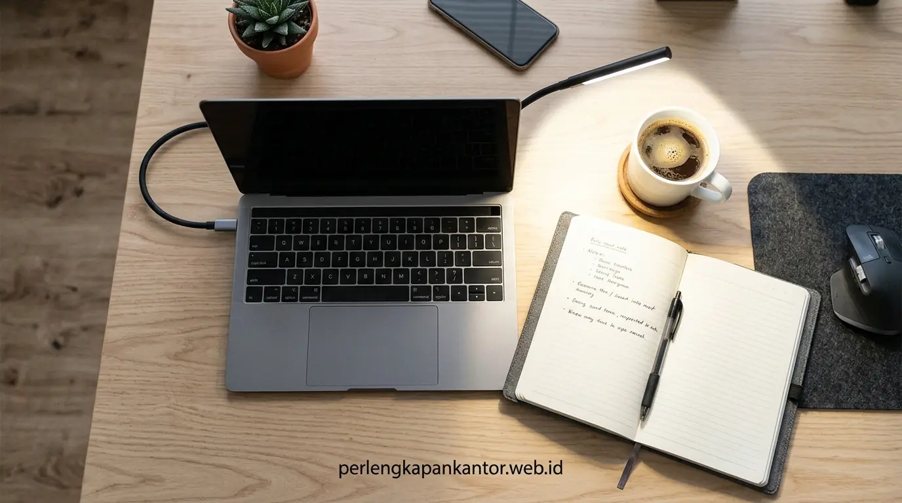

Bandingkan Lampu Meja Kerja LED USB vs Lampu Meja Biasa
Komparasi lampu meja led usb vs biasa menunjukkan model LED USB lebih hemat daya 75%, bebas flicker, memiliki fitur pengatur temperatur warna, serta fleksibel ditenagai power bank atau port laptop.


Perbandingan visual setup pencahayaan workstation menggunakan lampu meja LED USB hemat daya dengan distribusi cahaya terfokus dibandingkan lampu bohlam konvensional yang menyilaukan.
- Efisiensi Energi Tinggi: Lampu meja LED USB mengonsumsi daya rata-rata hanya 5 Watt, menghemat pengeluaran listrik hingga 80% dibanding lampu meja biasa berdaya 40-60 Watt.
- Kenyamanan Penglihatan (Ergonomi Visual): Dilengkapi teknologi optik asimetris dan flicker-free yang mencegah ketegangan mata (asthenopia) serta pantulan silau pada layar monitor.
- Fleksibilitas Pengaturan: Pengguna dapat dengan mudah mengatur tingkat kecerahan (dimming) dan beralih antara cahaya hangat (Warm White 3000K) dan putih fokus (Cool White 6000K).
- Portabilitas Praktis: Dapat dicolokkan ke port USB PC/laptop, charger HP, maupun power bank saat terjadi pemadaman listrik.
- Mengapa Kualitas Pencahayaan Meja Kerja Sangat Berpengaruh pada Produktivitas?
- Apa Saja Perbedaan Teknis Lampu Meja LED USB vs Lampu Meja Biasa?
- Tabel Komparasi Spesifikasi Lampu Meja LED USB vs Lampu Meja Biasa
- Bagaimana Keunggulan Lampu Monitor Lightbar USB untuk Meja Minimalis?
- Bagaimana Tips Memilih Lampu Kerja yang Ideal untuk Setup Kantor dan WFH?
- Pertanyaan Populer Seputar Lampu Meja Kerja (FAQ)
- Kesimpulan Praktis
Mengapa Kualitas Pencahayaan Meja Kerja Sangat Berpengaruh pada Produktivitas?
Kualitas pencahayaan meja kerja menentukan tingkat fokus dan kenyamanan saraf mata, di mana pencahayaan buruk dapat memicu sakit kepala, mata kering, serta penurunan konsentrasi kerja hingga 30%.
Bagi para pekerja kantoran dan pekerja jarak jauh (remote worker/WFH), menghabiskan waktu 8 hingga 10 jam di depan layar monitor adalah rutinitas sehari-hari. Sayangnya, banyak ruang kerja hanya mengandalkan lampu plafon utama yang menyinari dari atas kepala. Kondisi ini sering kali menimbulkan bayangan tubuh di area kerja keyboard atau kontras cahaya ekstrem antara layar monitor yang terang benderang dengan permukaan meja yang gelap gulita.
Berdasarkan publikasi riset Occupational Health & Lighting Ergonomics Journal (2025), pencahayaan kerja LED terarah bebas kedipan (flicker-free) terbukti mampu menurunkan tingkat kelelahan mata (asthenopia) pekerja kantor hingga 58%. Selain itu, pencahayaan dengan indeks render warna (CRI) tinggi menjaga ritme sirkadian tubuh sehingga staf tidak mudah mengantuk saat menyelesaikan laporan kritis di sore hari.
Oleh karena itu, memilih antara lampu meja led usb vs biasa bukan hanya soal estetika desain, tetapi menyangkut investasi kesehatan mata jangka panjang dan kenyamanan bekerja tanpa gangguan pusing atau silau.
Apa Saja Perbedaan Teknis Lampu Meja LED USB vs Lampu Meja Biasa?
Perbedaan teknis utama terletak pada efisiensi daya listrik, emisi panas, kemampuan modulasi spektrum warna (CCT), dan kepraktisan sumber daya menggunakan koneksi port USB 5V.
Lampu meja tradisional biasanya menggunakan bohlam pijar (incandescent) atau lampu CFL dengan soket E27 yang dicolokkan langsung ke stopkontak dinding 220V AC. Sementara itu, lampu meja modern dirancang berbasis chip Surface Mount Device (SMD) LED yang ditenagai arus searah DC 5 Volt via konektor USB Type-A atau Type-C.
Data dari Asosiasi Efisiensi Energi Perkantoran Indonesia (Q4-2025) mengungkapkan bahwa konversi lampu meja konvensional ke lampu meja LED USB menghasilkan penghematan konsumsi listrik workstation harian sebesar 70% hingga 80% per unit meja, sekaligus menekan biaya penggantian bohlam secara drastis karena LED memiliki usia pakai hingga 30.000–50.000 jam operasi.
usb Karakteristik Lampu LED USB
- Daya Sangat Rendah: Hanya membutuhkan 4W – 8W.
- Dingin & Nyaman: Tidak memancarkan panas inframerah ke wajah.
- Bebas Flicker: Driver IC arus konstan mencegah kedipan pemicu migrain.
- Fleksibilitas Sumber Daya: Dapat menyala dari laptop, PC desktop, adaptor charger, atau power bank.
lightbulb Karakteristik Lampu Meja Biasa
- Daya Tinggi: Membutuhkan 25W – 60W per titik meja.
- Menimbulkan Panas: Menghangatkan area meja dan wajah pengguna.
- Cahaya Satu Arah Statis: Tidak dapat diatur temperatur warnanya.
- Ketergantungan Stopkontak: Kabel colokan tebal 220V yang membatasi tata letak meja kerja.

Pemanfaatan lampu meja LED USB model monitor lightbar yang menempel di atas monitor untuk menghemat ruang meja kerja minimalis.
Tabel Komparasi Spesifikasi Lampu Meja LED USB vs Lampu Meja Biasa
Tabel komparasi berikut memperlihatkan perbandingan menyeluruh antara lampu meja LED USB modern dan lampu meja konvensional dari segi spesifikasi fungsional, ergonomi, dan efisiensi biaya.
| Parameter Evaluasi | Lampu Meja LED USB (Modern) | Lampu Meja Biasa (Bohlam Konvensional) | Pemenang |
|---|---|---|---|
| Konsumsi Daya Listrik | 4 – 8 Watt (Hemat Listrik Ekstrem) | 25 – 60 Watt (Boros Energi) | LED USB |
| Teknologi Bebas Kedip (Flicker) | Ya (100% Flicker-Free Driver DC) | Tidak (Kedipan 50Hz/60Hz frekuensi AC) | LED USB |
| Pilihan Temperatur Warna (CCT) | 3 Mode: 3000K (Warm), 4500K (Natural), 6500K (Cool) | Hanya 1 Warna (Tergantung bohlam yang dipasang) | LED USB |
| Pengaturan Kecerahan (Dimming) | Stepless Touch Dimming (10% – 100%) | Hanya tombol On / Off biasa | LED USB |
| Pencegahan Silau Layar (Anti-Glare) | Optik asimetris terarah hanya ke permukaan meja | Menyebar 360 derajat dan memantul di monitor | LED USB |
| Masa Pakai (Durabilitas) | 30.000 – 50.000 Jam (Hingga 5-7 Tahun) | 1.000 – 6.000 Jam (Sering putus & ganti) | LED USB |
| Penggunaan Ruang Meja | Sangat ringkas (Tersedia varian klip monitor lightbar) | Makan tempat dengan base dudukan yang berat | LED USB |
Bagaimana Keunggulan Lampu Monitor Lightbar USB untuk Meja Minimalis?
Lampu monitor lightbar USB menawarkan solusi pencahayaan meja kerja zero-footprint yang dipasang langsung di atas bingkai layar tanpa memakan luas permukaan meja sedikit pun.
Bagi profesional yang memiliki ukuran meja kerja terbatas (misalnya meja 100x60 cm atau 120x60 cm), kehadiran lampu meja model dudukan konvensional sering kali mempersempit ruang gerak mouse dan tumpukan dokumen. Inilah mengapa varian monitor lightbar atau screenbar LED USB menjadi tren utama setup kerja modern.
Dengan sudut bias cahaya asimetris 45 derajat, cahaya lampu hanya jatuh menerangi keyboard, buku catatan, dan permukaan meja di depan pengguna tanpa pernah mengenai kaca monitor. Hasilnya adalah kontras layar yang jernih, bebas silau (screen glare-free), dan estetika ruang kerja yang terlihat sangat rapi dan futuristik.
Jika Anda sedang mencari harga lampu monitor lightbar murah atau rekomendasi lampu meja terbaik untuk kantor, PerlengkapanKantor menyediakan aneka varian lampu LED USB bergaransi dengan penawaran harga distributor langsung.
Bagaimana Tips Memilih Lampu Kerja yang Ideal untuk Setup Kantor dan WFH?
Tips memilih lampu kerja ideal mencakup penyesuaian nilai CRI > 90, keberadaan tombol sentuh dimming halus, fleksibilitas leher lampu gooseneck, serta pemilihan paket furnitur kerja terintegrasi.
Untuk mendapatkan hasil setup yang optimal, ikuti panduan praktis berikut saat merencanakan pengadaan lampu meja kerja:
- Pilih Indeks Akurasi Warna Tinggi (CRI ≥ 90): Lampu dengan CRI tinggi memastikan dokumen warna, grafik presentasi, dan buku dibaca dengan warna natural tanpa distorsi keabu-abuan.
- Fitur Multi-Suhu Warna: Gunakan warna Cool White (5000K–6500K) untuk fokus mengetik data dan analisis numerik, serta ubah ke Warm White (2700K–3500K) untuk membaca santai di malam hari.
- Portabilitas & Kualitas Kabel: Pastikan kabel USB menggunakan serat tembaga tebal dan panjang minimal 1,5 meter agar mudah dihubungkan ke CPU atau power hub meja.
- Investasi dalam Paket Bundling Furnitur: Manfaatkan promo Beli Paket WFH Hemat di PerlengkapanKantor yang sudah mencakup meja kerja kokoh, kursi mesh ergonomis, dan aksesoris pencahayaan berkualitas.
Pertanyaan Populer Seputar Lampu Meja Kerja (FAQ)
Kesimpulan Praktis
Memilih lampu meja LED USB dibandingkan lampu meja biasa adalah langkah cerdas untuk menciptakan workstation yang ergonomis, hemat energi, dan bebas silau. Lengkapi ruang kerja rumah atau kantor Anda dengan paket furnitur dan aksesoris kerja terbaik dari PerlengkapanKantor!
Penulis: Tim Spesialis Perlengkapan Kantor
Divisi Riset Ergonomi & Aksesoris Kerja di PerlengkapanKantor. Berfokus pada inovasi peralatan pendukung produktivitas, tata cahaya workstation, dan kenyamanan lingkungan kerja profesional.